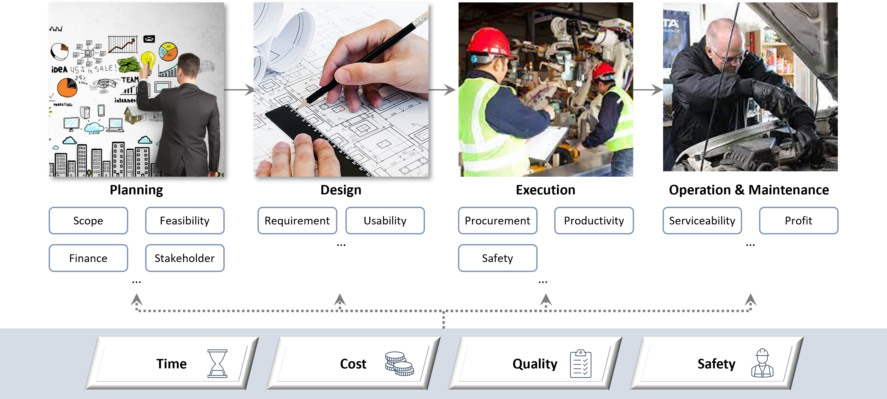

<html lang="en" translate="no">
  <head>
    <meta name="google" content="notranslate">
  </head>
</html>

<!-- Slider Start -->
<!-- <section id="slider">
  <div class="container">
    <div class="row">
      <div class="col-md-10 col-md-offset-2">
        <div class="block">
          <h1 class="animated fadeInUp">DXLAB</h1>
          <p class="animated fadeInUp">Digital Transformation LAB</p>
          <p class="animated fadeInUp">Department of Industrial and Systems Engineering</p>
          <p class="animated fadeInUp">Gyeongsang National University</p>
        </div>
      </div>
    </div>
  </div>
</section> -->

<!-- Wrapper Start -->
<section id="intro">
  <div class="container">
    <div class="row">
      <div class="col-md-7 col-sm-12">
        <div class="block">
          <div class="section-title">
            <!-- <h2>About Us</h2> -->
            <h2>Homepage Remodeling</h2>
            <!-- <p>Our ultimate GOAL is to digitalize every information and experience knowledge of industrial sites.</p> -->
          </div>

          <p>
          	DXLAB 홈페이지 리모델링 중입니다. 아래 링크로 이동해주세요.
          	The DXLAB homepage is under remodelig. Please visit the below.
          </p>
          <a href="https://dxlabgnu.notion.site">
          	https://dxlabgnu.notion.site/
          </a>
	        
          <!-- <p>
            우리의 목표는 산업현장에 존재하는 정보와 경험지식을 디지털화하는 것입니다.  
          </p>
          <p>
            디지털전환(Digital Transformation)이란 디지털 기술을 활용하여 산업현장에서 생성되는 데이터를 수집 및 분석하고, 이를 통해 더 나은 의사결정을 수행하기 위한 과정입니다. 머신러닝/인공지능/데이터 사이언스 기술을 바탕으로 센서 데이터, 이미지 데이터, 텍스트 데이터, 디지털 맵 등 현장의 데이터를 분석하고, 의미있는 정보를 도출합니다.
          </p> -->
        </div>
      <!-- </div> -->
      <!-- <div class="col-md-5 col-sm-12"> -->
        <!-- <div class="block">
          
        </div> -->
      </div><!-- .col-md-5 close -->
    </div>
  </div>
</section>

<!-- Call to action Start -->
<!-- <section id="call-to-action">
  <div class="container">
    <div class="row">
      <div class="col-md-12">
        <div class="block">
          <h2>We are looking for motivated students and postdocs!</h2>
          <p>IPMLAB과 함께할 학부생인턴/석사과정/박사과정/박사후연구원을 모집하고 있습니다.</p>
          <p>자세한 내용은 이메일로 문의주시기 바랍니다.</p> -->
          <!-- <a class="btn btn-default btn-call-to-action" href="{{ site.baseurl }}/contact/#" >Contact us</a>
        </div>
      </div>
    </div>
  </div>
</section> -->